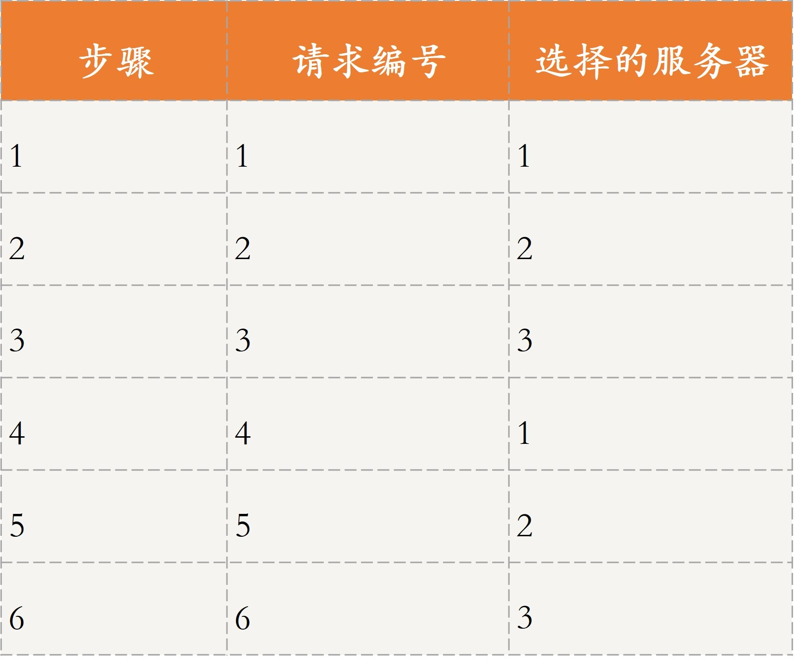
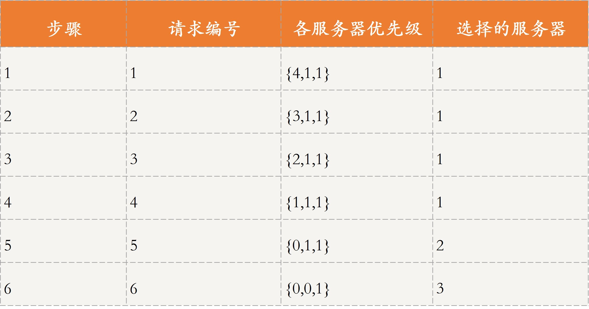
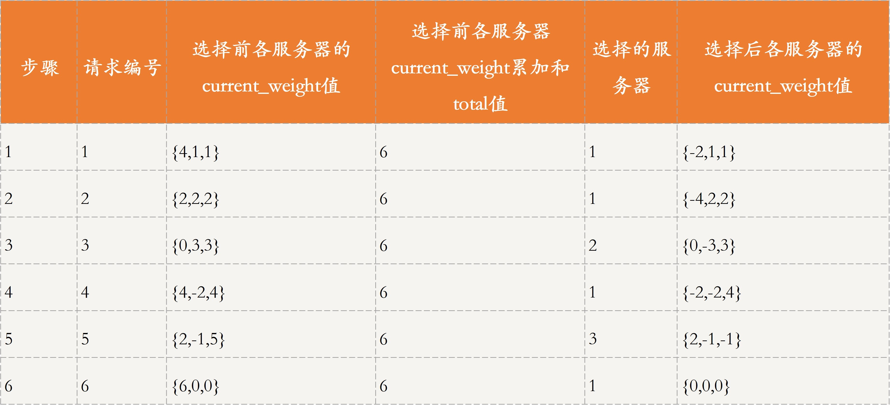
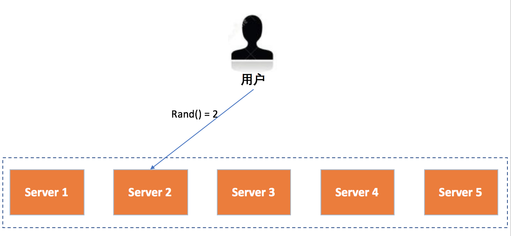
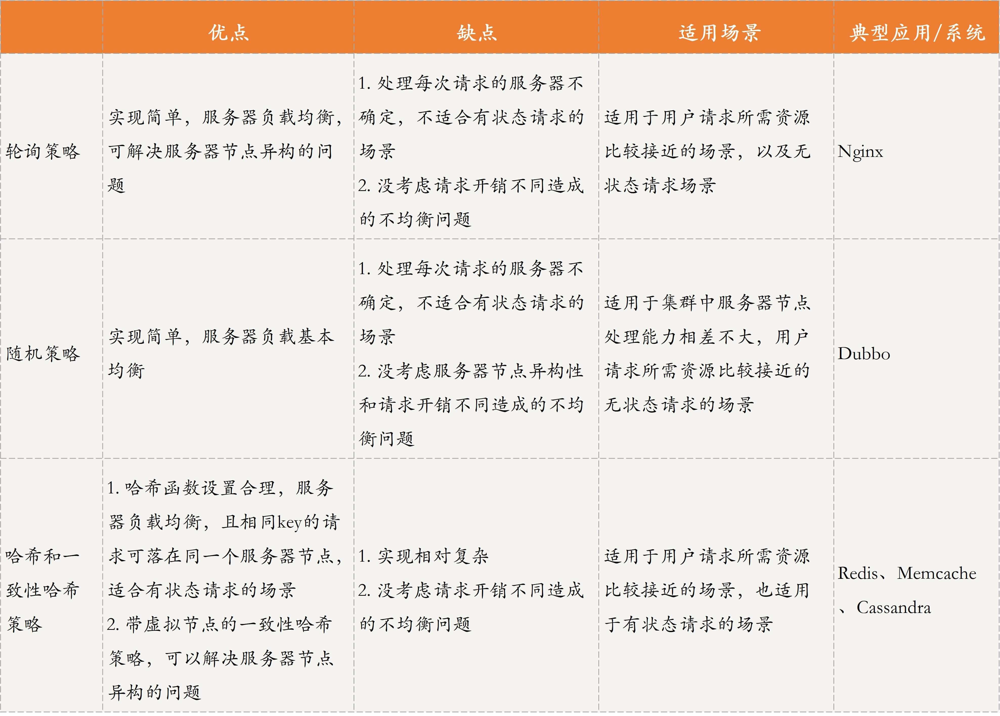
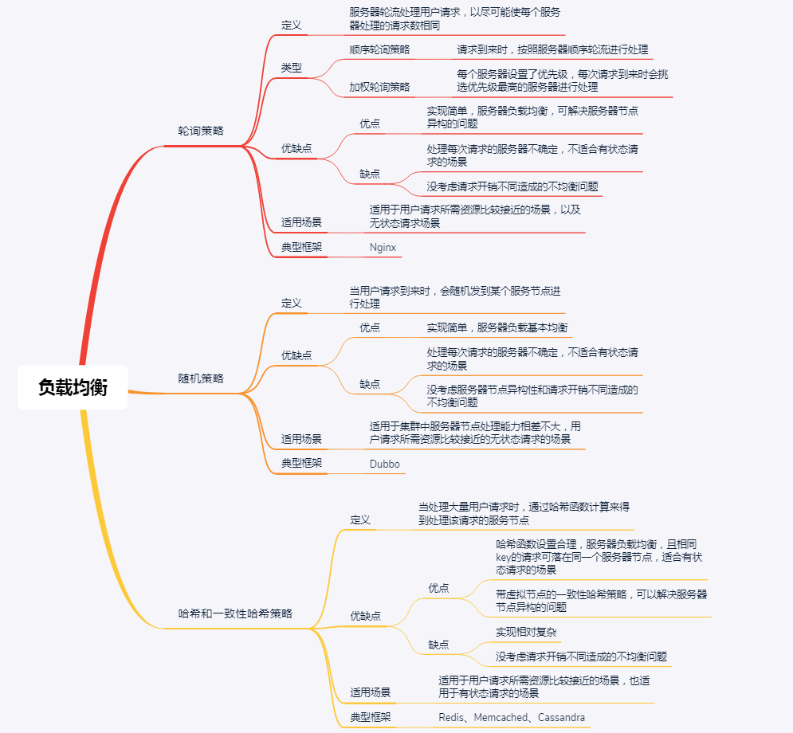

- 00 开篇词 四纵四横，带你透彻理解分布式技术.md.html
- 01 分布式缘何而起：从单兵，到游击队，到集团军.md.html
- 02 分布式系统的指标：啥是分布式的三围.md.html
- 03 分布式互斥：有你没我，有我没你.md.html
- 04 分布式选举：国不可一日无君.md.html
- 05 分布式共识：存异求同.md.html
- 06 分布式事务：All or nothing.md.html
- 07 分布式锁：关键重地，非请勿入.md.html
- 08 分布式技术是如何引爆人工智能的？.md.html
- 09 分布式体系结构之集中式结构：一人在上，万人在下.md.html
- 10 分布式体系结构之非集中式结构：众生平等.md.html
- 11 分布式调度架构之单体调度：物质文明、精神文明一手抓.md.html
- 12 分布式调度架构之两层调度：物质文明、精神文明两手抓.md.html
- 13 分布式调度架构之共享状态调度：物质文明、精神文明多手协商抓.md.html
- 14 答疑篇：分布式事务与分布式锁相关问题.md.html
- 15 分布式计算模式之MR：一门同流合污的艺术.md.html
- 16 分布式计算模式之Stream：一门背锅的艺术.md.html
- 17 分布式计算模式之Actor：一门甩锅的艺术.md.html
- 18 分布式计算模式之流水线：你方唱罢我登场.md.html
- 19 分布式通信之远程调用：我是你的千里眼.md.html
- 20 分布式通信之发布订阅：送货上门.md.html
- 21 分布式通信之消息队列：货物自取.md.html
- 22 答疑篇：分布式体系架构与分布式计算相关问题.md.html
- 23 CAP理论：这顶帽子我不想要.md.html
- 24 分布式数据存储系统之三要素：顾客、导购与货架.md.html
- 25 数据分布方式之哈希与一致性哈希：“掐指一算”与“掐指两算”的事.md.html
- 26 分布式数据复制技术：分身有术.md.html
- 27 分布式数据之缓存技术：“身手钥钱”随身带.md.html
- 28 分布式高可靠之负载均衡：不患寡，而患不均.md.html
- 29 分布式高可靠之流量控制：大禹治水，在疏不在堵.md.html
- 30 分布式高可用之故障隔离：当断不断，反受其乱.md.html
- 31 分布式高可用之故障恢复：知错能改，善莫大焉.md.html
- 32 答疑篇：如何判断并解决网络分区问题？.md.html
- 33 知识串联：以购买火车票的流程串联分布式核心技术.md.html
- 34 搭建一个分布式实验环境：纸上得来终觉浅，绝知此事要躬行.md.html
- 特别放送 Jackey：寄语天涯客，轻寒底用愁.md.html
- 特别放送 分布式下的一致性杂谈.md.html
- 特别放送 崔新：追根溯源，拨开云雾见青天.md.html
- 特别放送 徐志强：学习这件事儿，不到长城非好汉.md.html
- 特别放送 那些你不能错过的分布式系统论文.md.html
- 结束语 为什么说提升职业竞争力要从尊重、诚实开始？.md.html
- 捐赠
28 分布式高可靠之负载均衡：不患寡，而患不均
你好！我是聂鹏程。今天，我来继续带你打卡分布式核心技术。
到目前为止，我已经为你介绍了分布式起源、分布式协调与同步、分布式资源管理与负载调度、分布式计算技术、分布式通信技术和分布式数据存储。可以说，掌握了这些内容，基本上就掌握了分布式的关键技术。
然而，只有可靠的分布式系统才能真正应用起来。那么，分布式系统的可靠性又是如何实现的呢？
不要着急，接下来几篇文章，我会和你一起学习分布式可靠性相关的知识，包括负载均衡、流量控制、故障隔离和故障恢复。
在这其中，负载均衡是分布式可靠性中非常关键的一个问题或技术，在一定程度上反映了分布式系统对业务处理的能力。比如，早期的电商抢购活动，当流量过大时，你可能就会发现有些地区可以购买，而有些地区因为服务崩溃而不能抢购。这，其实就是系统的负载均衡出现了问题。
接下来，我们就一起来打卡分布式高可靠之负载均衡。
什么是负载均衡？
先举个例子吧。以超市收银为例，假设现在只有一个窗口、一个收银员：
- 一般情况下，收银员平均2分钟服务一位顾客，10分钟可以服务5位顾客；
- 到周末高峰期时，收银员加快收银，平均1分钟服务一位顾客，10分钟最多服务10位顾客，也就是说一个顾客最多等待10分钟；
- 逢年过节，顾客数量激增，一下增加到30位顾客，如果仍然只有一个窗口和一个收银员，那么所有顾客就只能排队等候了，一个顾客最多需要等待30分钟。这样购物体验，就非常差了。
那有没有解决办法呢？
当然有。那就是新开一个收银窗口，每个收银窗口服务15个顾客，这样最长等待时间从30分钟缩短到15分钟。但如果，这两个窗口的排队顾客数严重不均衡，比如一个窗口有5个顾客排队，另一个窗口却有25个顾客排队，就不能最大化地提升顾客的购物体验。
所以，尽可能使得每个收银窗口排队的顾客一样多，才能最大程度地减少顾客的最长排队时间，提高用户体验。
看完这个例子，你是不是想到了一句话“不患寡，而患不均”？这，其实就是负载均衡的基本原理。
通常情况下，负载均衡可以分为两种：
- 一种是请求负载均衡，即将用户的请求均衡地分发到不同的服务器进行处理；
- 另一种是数据负载均衡，即将用户更新的数据分发到不同的存储服务器。
我在第25篇文章分享数据分布方法时，提到：数据分布算法很重要的一个衡量标准，就是均匀分布。可见，哈希和一致性哈希等，其实就是数据负载均衡的常用方法。那么今天，我就与你着重说说服务请求的负载均衡技术吧。
分布式系统中，服务请求的负载均衡是指，当处理大量用户请求时，请求应尽量均衡地分配到多台服务器进行处理，每台服务器处理其中一部分而不是所有的用户请求，以完成高并发的请求处理，避免因单机处理能力的上限，导致系统崩溃而无法提供服务的问题。
比如，有N个请求、M个节点，负载均衡就是将N个请求，均衡地转发到这M个节点进行处理。
服务请求的负载均衡方法
通常情况下，计算机领域中，在不同层有不同的负载均衡方法。比如，从网络层的角度，通常有基于DNS、IP报文等的负载均衡方法；在中间件层（也就是我们专栏主要讲的分布式系统层），常见的负载均衡策略主要包括轮询策略、随机策略、哈希和一致性哈希等策略。
今天，我着重与你分析的就是，中间件层所涉及的负载均衡策略。接下来，我们就具体看看吧。
轮询策略
轮询策略是一种实现简单，却很常用的负载均衡策略，核心思想是服务器轮流处理用户请求，以尽可能使每个服务器处理的请求数相同。生活中也有很多类似的场景，比如，学校宿舍里，学生每周轮流打扫卫生，就是一个典型的轮询策略。
在负载均衡领域中，轮询策略主要包括顺序轮询和加权轮询两种方式。
首先，我们一起看看顺序轮询。假设有6个请求，编号为请求1~6，有3台服务器可以处理请求，编号为服务器1~3，如果采用顺序轮询策略，则会按照服务器1、2、3的顺序轮流进行请求。
如表所示，将6个请求当成6个步骤：
- 请求1由服务器1处理；
- 请求2由服务器2进行处理。
- 以此类推，直到处理完这6个请求。

最终的处理结果是，服务器1处理请求1和请求4，服务器2处理请求2和请求5，服务器3处理请求3和请求6。
接下来，我们看一下加权轮询。
加权轮询为每个服务器设置了优先级，每次请求过来时会挑选优先级最高的服务器进行处理。比如服务器1~3分配了优先级{4，1，1}，这6个请求到来时，还当成6个步骤，如表所示。
- 请求1由优先级最高的服务器1处理，服务器1的优先级相应减1，此时各服务器优先级为{3，1，1}；
- 请求2由目前优先级最高的服务器1进行处理，服务器1优先级相应减1，此时各服务器优先级为{2，1，1}。
- 以此类推，直到处理完这6个请求。每个请求处理完后，相应服务器的优先级会减1。

最终的处理结果是，服务器1处理请求1~4，服务器2处理请求5，服务器3会处理请求6。
以上就是顺序轮询和加权轮询的核心原理了。轮询策略的应用比较广泛，比如Nginx默认的负载均衡策略就是一种改进的加权轮询策略。我们具体看看它的核心原理吧。
首先，我来解释下Nginx轮询策略需要用到的变量吧。
- weight：配置文件中为每个服务节点设置的服务节点权重，固定不变。
- effective_weight：服务节点的有效权重，初始值为weight。 在Nginx的源码中有一个最大失败数的变量max_fails，当服务发生异常时，则减少相应服务节点的有效权重，公式为effective_weight = effective_weight - weight / max_fails；之后再次选取本节点，若服务调用成功，则增加有效权重，effective_weight ++ ，直至恢复到weight。
- current_weight：服务节点当前权重，初始值均为0，之后会根据系统运行情况动态变化。
假设，各服务器的优先级是{4，1，1}，我还是将6个请求分为6步来进行讲解，如表所示：
- 遍历集群中所有服务节点，使用current_weight = current_weight + effective_weight，计算此时每个服务节点的current_weight，得到current_weight为{4，1，1}，total为4+1+1=6。选出current_weight值最大的服务节点即服务器1来处理请求，随后服务器1对应的current_weight减去此时的total值，即4 - 6，变为了-2 。
- 按照上述步骤执行，首先遍历，按照current_weight = current_weight + effective_weight计算每个服务节点current_weight的值，结果为{2，2，2}，total为6，选出current_weight值最大的服务节点。current_weight 最大值有多个服务节点时，直接选择第一个节点即可，在这里选择服务器1来处理请求，随后服务器1对应的current_weight值减去此时的total，即2 - 6，结果为-4。
- 以此类推，直到处理完这6个请求。

最终的处理结果为，服务器1处理请求1、2、4、6，服务器2处理请求3，服务器3会处理请求5。
可以看到，与普通的加权轮询策略相比，这种轮询策略的优势在于，当部分请求到来时，不会集中落在优先级较高的那个服务节点。
还是上面的例子，假设只有4个请求，按照普通的加权轮询策略，会全部由服务器1进行处理，即{1,1,1,1}；而按照这种平滑的加权轮询策略的话，会由服务器1和2共同进行处理，即{1,1,2,1}。
轮询策略的优点就是，实现简单，且对于请求所需开销差不多时，负载均衡效果比较明显，同时加权轮询策略还考虑了服务器节点的异构性，即可以让性能更好的服务器具有更高的优先级，从而可以处理更多的请求，使得分布更加均衡。
但轮询策略的缺点是，每次请求到达的目的节点不确定，不适用于有状态请求的场景。并且，轮询策略主要强调请求数的均衡性，所以不适用于处理请求所需开销不同的场景。
比如，有两个服务器（节点A和节点B）性能相同，CPU个数和内存均相等，有4个请求需要处理，其中请求1和请求3需要1个CPU，请求2和请求4需要2个CPU。根据轮询策略，请求1和请求3由节点A、请求2和请求4由节点B处理。由此可见，节点A和节点B关于CPU的负载分别是2和4，从这个角度来看，两个节点的负载并不均衡。
综上所述，轮询策略适用于用户请求所需资源比较接近的场景。
随机策略
随机策略也比较容易理解，指的就是当用户请求到来时，会随机发到某个服务节点进行处理，可以采用随机函数实现。这里，随机函数的作用就是，让请求尽可能分散到不同节点，防止所有请求放到同一节点或少量几个节点上。
如图所示，假设有5台服务器Server 1~5可以处理用户请求，每次请求到来时，都会先调用一个随机函数来计算出处理节点。这里，随机函数的结果只能是{1,2,3,4,5}这五个值，然后再根据计算结果分发到相应的服务器进行处理。比如，图中随机函数计算结果为2，因此该请求会由Server2处理。

这种方式的优点是，实现简单，但缺点也很明显，与轮询策略一样，每次请求到达的目的节点不确定，不适用于有状态的场景，而且没有考虑到处理请求所需开销。除此之外，随机策略也没有考虑服务器节点的异构性，即性能差距较大的服务器可能处理的请求差不多。
因此，随机策略适用于，集群中服务器节点处理能力相差不大，用户请求所需资源比较接近的场景。
比如，我在第19篇文章中提到的RPC框架Dubbo，当注册中心将服务提供方地址列表返回给调用方时，调用方会通过负载均衡算法选择其中一个服务提供方进行远程调用。关于负载均衡算法，Dubbo提供了随机策略、轮询策略等。
哈希和一致性哈希策略
无论是轮询还是随机策略，对于一个客户端的多次请求，每次落到的服务器很大可能是不同的，如果这是一台缓存服务器，就会对缓存同步带来很大挑战。尤其是系统繁忙时，主从延迟带来的同步缓慢，可能会造成同一客户端两次访问得到不同的结果。解决方案就是，利用哈希算法定位到对应的服务器。
哈希和一致性哈希，是数据负载均衡的常用算法。 我在第25篇文章介绍哈希与一致性哈希时，提到过：数据分布算法的均匀性，一方面指数据的存储均匀，另一方面也指数据请求的均匀。
数据请求就是用户请求的一种，哈希、一致性哈希、带有限负载的一致性哈希和带虚拟节点的一致性哈希算法，同样适用于请求负载均衡。
所以，哈希与一致性策略的优点是，哈希函数设置合理的话，负载会比较均衡。而且，相同key的请求会落在同一个服务节点上，可以用于有状态请求的场景。除此之外，带虚拟节点的一致性哈希策略还可以解决服务器节点异构的问题。
但其缺点是，当某个节点出现故障时，采用哈希策略会出现数据大规模迁移的情况，采用一致性哈希策略可能会造成一定的数据倾斜问题。同样的，这两种策略也没考虑请求开销不同造成的不均衡问题。
应用哈希和一致性哈希策略的框架有很多，比如Redis、Memcached、Cassandra等，你可以再回顾下第25篇文章中的相关内容。
除了以上这些策略，还有一些负载均衡策略比较常用。比如，根据服务节点中的资源信息（CPU，内存等）进行判断，服务节点资源越多，就越有可能处理下一个请求；再比如，根据请求的特定需求，如请求需要使用GPU资源，那就需要由具有GPU资源的节点进行处理等。
对比分析
以上，就是轮询策略、随机策略、哈希和一致性哈希策略的主要内容了。接下来，我再通过一个表格对比下这三种方法，以便于你学习和查阅。

知识扩展：如果要考虑请求所需资源不同的话，应该如何设计负载均衡策略呢？
上面提到的轮询策略、随机策略，以及哈希和一致性哈希策略，主要考虑的是请求数的均衡，并未考虑请求所需资源不同造成的不均衡问题。那么，如何设计负载均衡策略，才能解决这个问题呢？
其实，这个问题的解决方案有很多，常见的思路主要是对请求所需资源与服务器空闲资源进行匹配，也称调度。
关于调度，不知你是否还记得第11篇文章所讲的单体调度？我们可以使用单体调度的思路，让集群选举一个主节点，每个从节点会向主节点汇报自己的空闲资源；当请求到来时，主节点通过资源调度算法选择一个合适的从节点来处理该请求。
在这篇文章中，我提到了最差匹配和最佳匹配算法。这两种算法各有利弊，最差匹配算法可以尽量将请求分配到不同机器，但可能会造成资源碎片问题；而最佳匹配算法，虽然可以留出一些“空”机器来处理开销很大的请求，但会造成负载不均的问题。因此，它们适用于不同的场景，你可以再回顾下第11篇文章中的相关内容。
除此之外，一致性哈希策略也可以解决这个问题：让请求所需的资源和服务器节点的空闲资源，与哈希函数挂钩，即通过将资源作为自变量，带入哈希函数进行计算，从而映射到哈希环中。
比如，我们设置的哈希函数结果与资源正相关，这样就可以让资源开销大的请求由空闲资源多的服务器进行处理，以实现负载均衡。但这种方式也有个缺点，即哈希环上的节点资源变化后，需要进行哈希环的更新。
总结
今天，我主要带你学习了分布式高可靠技术中的负载均衡。
首先，我以超市收银为例，与你介绍了什么是负载均衡。负载均衡包括数据负载均衡和请求负载均衡，我在第25篇文章中介绍的数据分布其实就是数据的负载均衡，所以我今天重点与你分享的是请求的负载均衡。
然后，我与你介绍了常见的负载均衡策略，包括轮询策略、随机策略、哈希和一致性哈希策略。其中，轮询策略和随机策略，因为每次请求到达的目的节点不确定，只适用于无状态请求的场景；而哈希和一致性哈希策略，因为相同key的请求会落在同一个服务节点上，所以可以用于有状态请求的场景。
最后，我再通过一张思维导图来归纳一下今天的核心知识点吧。

加油，相信通过本讲的学习，你对分布式系统中的负载均衡有了一定的理解，也可以进一步对电商系统、火车票系统等涉及的请求负载均衡的问题进行分析了。加油，行动起来吧！
思考题
在分布式系统中，负载均衡技术除了各节点共同分担请求外，还有什么好处呢？
我是聂鹏程，感谢你的收听，欢迎你在评论区给我留言分享你的观点，也欢迎你把这篇文章分享给更多的朋友一起阅读。我们下期再会！
© 2019 - 2023 Liangliang Lee. Powered by gin and hexo-theme-book.